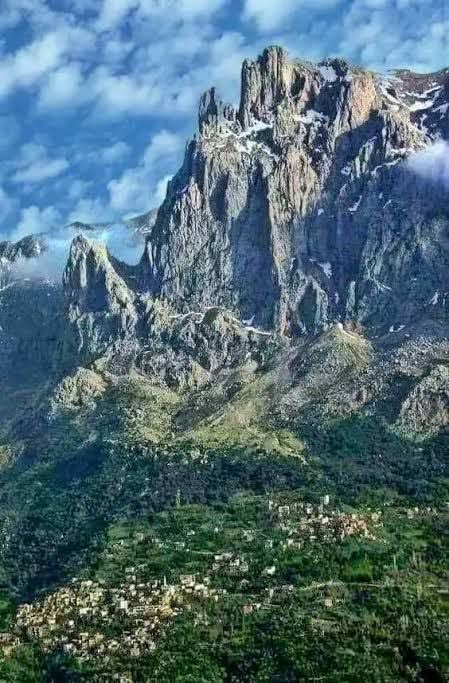

Matin sur le Djurdjura
La brume glisse entre les cèdres,
douce comme une prière,
Et s’attarde sur les toits,
un feu craque derrière les pierres.
Un coq perce le silence,
le vent descend du col,
avec l’odeur du bois mouillé
et le pain chauffe et fume sur le seuil.
Plus bas, le troupeau s’ébranle,
les pas résonnent sur la terre humide.
Un berger passe,
silencieux comme l’aube,
et les bêtes lèvent la tête
sans hâte, comme pour saluer.
Les montagnes veillent, immobiles,
le dos couvert d’or et de nuages.
Le jour s’étire entre les cimes,
timide, encore frileux —
Le soleil grimpe lentement
sur les toits de tuiles,
et sur la vitre d’une maison,
un enfant dessine un soleil
et dans un souffle clair,
le monde s’éveille — sans hâte.
Djamel Metref
At Yenni le 11 octobre 2025

← Tous les poèmes